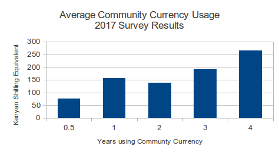
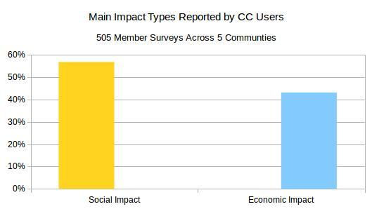
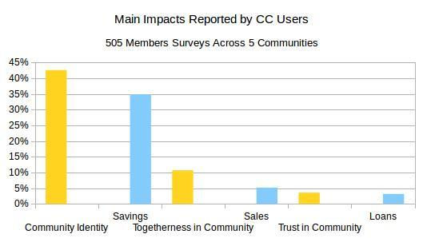

Preliminary Research Results 2017
Grassroots Economics currently facilitates Community Currency programs for 1140 businesses across 5 communities which report both social and economic impacts. A new program currently started in Kwale country without impact data. Both community demographics as well as impact of the Community Currency programs were surveyed.
Social Impacts:
Environmental Services: 57% of members (684) report Community Currency being used for environmental programs (Such as trash collection and community gardens)
Willing to continue: 93% of members (1114) want the program to continue and increase the amount of Sarafu-Credit in the community.
Education: 23% of members report using Sarafu-Credit for school fees (276 students with increased education)
Trust: 77% of members say that trust in the community has increased.
Gifting: When asked “How much over the last month did you give (in money professional services and time) to support people or groups without expecting compensation?”
Non-using Groups averaged 191 KSH (equivalent) Monthly
Community Currency users averaged 855 KSH (equivalent) monthly.
347.48% Higher amounts of gifting for those using Community Currency
Economic Impacts:
Usage with Kenyan Shillings: Based on 505 businesses surveyed across 5 networks an average of 36.6% of sales are being accepted in Community
Currency:
Food Security: 6% increase in daily food purchases are being made by members using Community Currency
Job Creation: 17% of members report hiring new employees because of the program (206 jobs created). This is over a 100% increase from baseline.
Customers: 57% of members report increases to customers and 65% report increases to sales because of the program.
Member retention: Overall we have issued a zero-interest credit to 1700 members totaling roughly 7200 EUR and retained 1140 members (95%).
Community Currency usage over time.(Average daily amount of CC usage). We find the longer people are in the program the more Community Currency they are using.
  